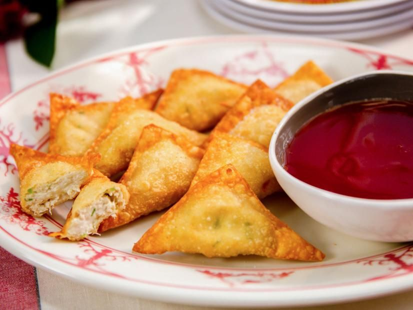
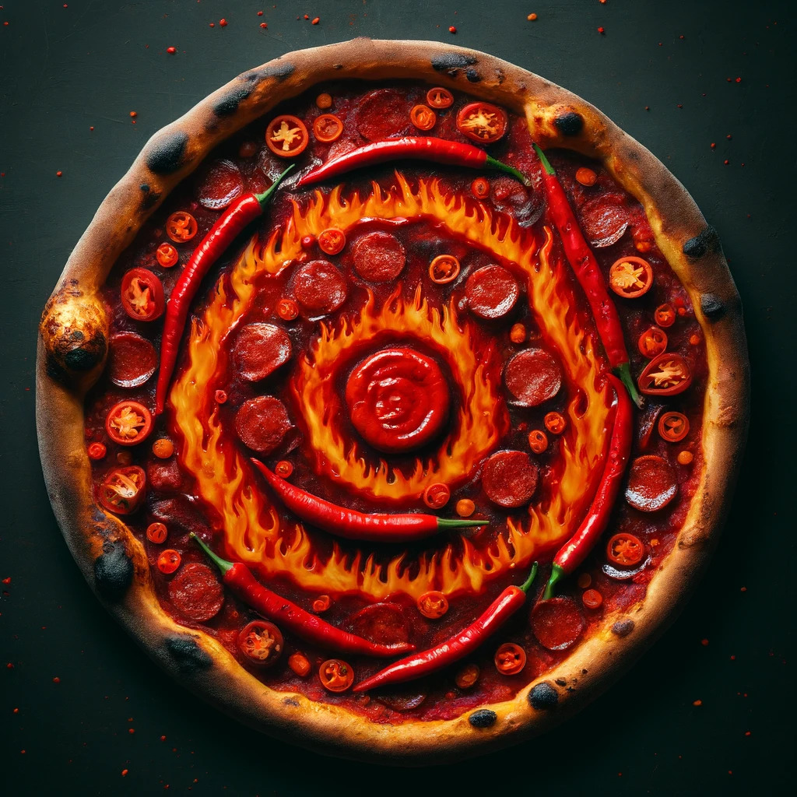
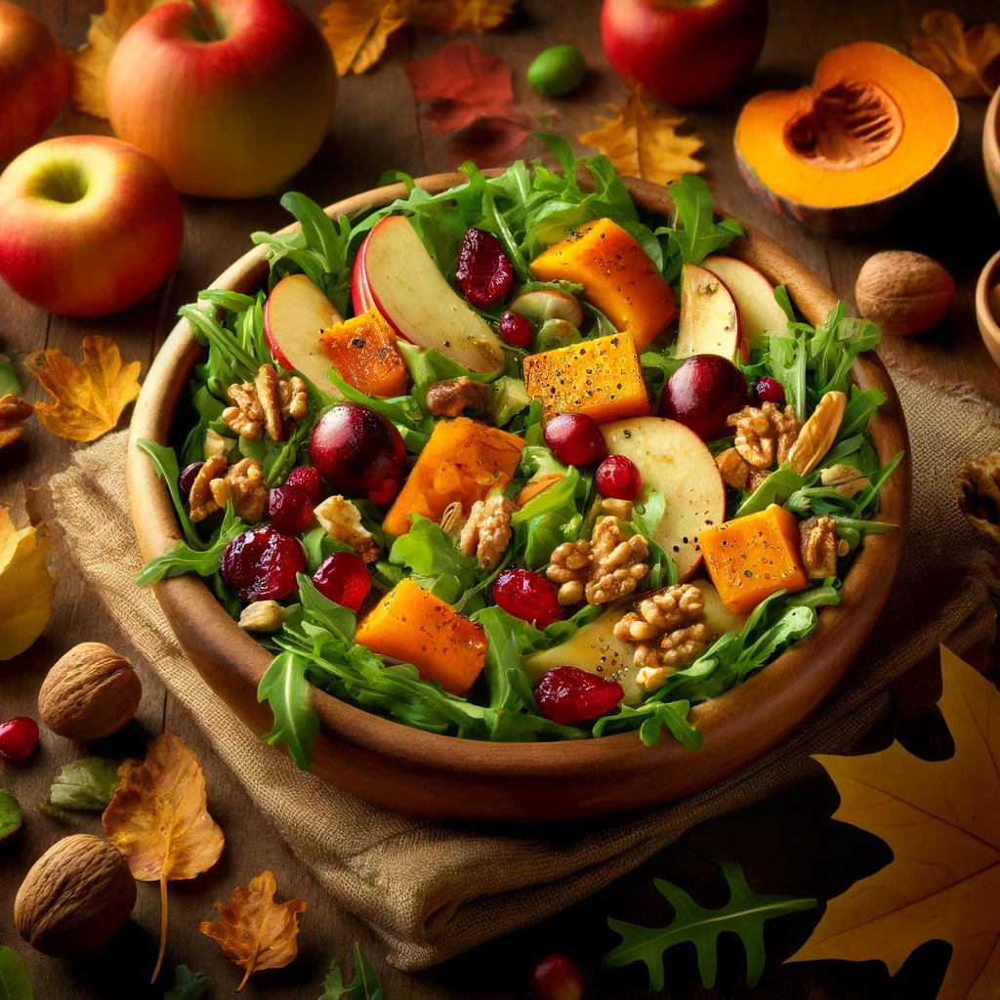
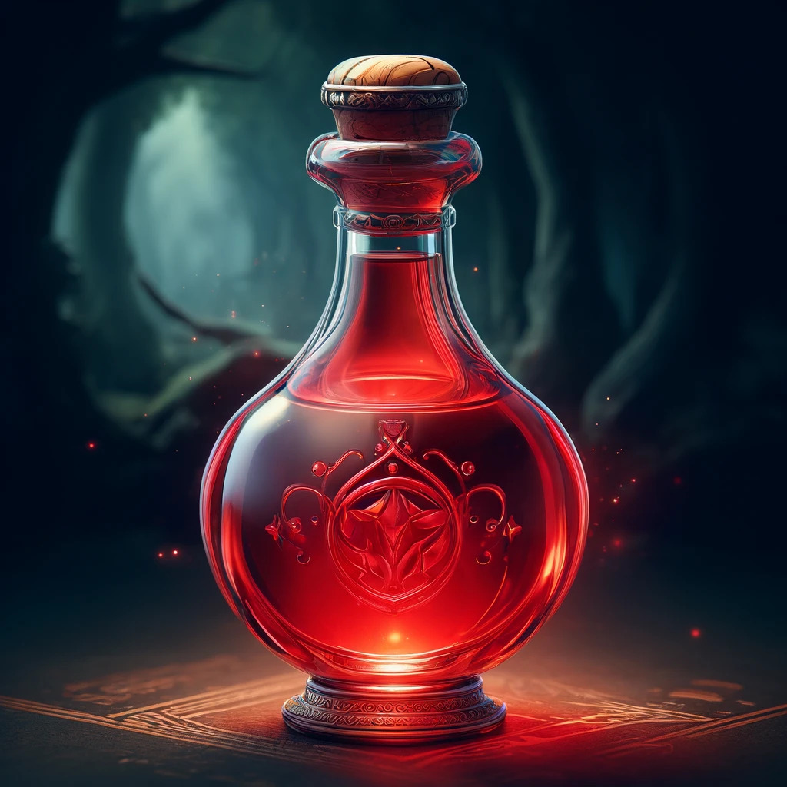
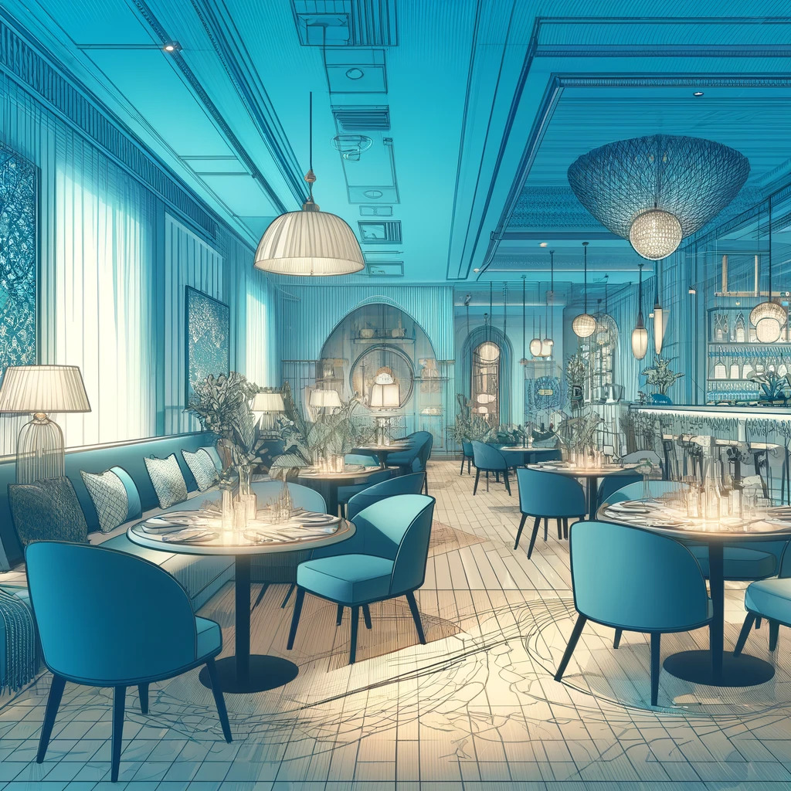

Лучшее место для встречи с друзьями и наслаждения уникальными блюдами.
Попробуйте наши хиты

Крабовый рангун из Far Cry 4
это популярная азиатская закуска в виде хрустящих жареных вонтонов ручной лепки. В игре это блюдо настойчиво предлагал главному герою один очень эпатажный диктатор.

Пицца Dante`s Inferno из Devil May Cry
то фантастический и крайне острый рецепт, вдохновленный персонажем игры, Данте, который любит острое и агрессивное.

Осенний салат из The Sims
Осенний салат "Simlish" — это свежий и ароматный салат, вдохновленный природой и уютом сезона осени.

Красное зелье из The Legend of Zelda
повторяющийся предмет в серии игр Legend of Zelda. Это тип лечебного лекарства, легко узнаваемого по красному цвету.
Мероприятия и вечеринки
У нас регулярно проходят тематические вечера, конкурсы и мастер-классы, посвященные миру видеоигр!
Вечер "Легенды Зельды"
Приглашаем вас провести вечер в атмосфере любимой игры! Вас ждут блюда прямо из Хайрула и квесты в стиле игры. Не забудьте забронировать место заранее, чтобы гарантировать участие в приключении!
Научитесь готовить блюда, как ваши любимые персонажи из The Sims! Мастер-класс от нашего шеф-повара поможет вам воплотить в жизнь самые изысканные кулинарные шедевры.
Присоединяйтесь к нашему ежемесячному турниру по Fortnite! Сражайтесь за звание лучшего и попробуйте уникальные блюда, вдохновлённые игрой. Великолепные призы ждут победителей.
Наши кулинарные традиции воплощают дух гостеприимства и качества, который вы оцените.
Ресторан GEMI был основан в 2010 году с миссией предложить посетителям не просто пищу, но кулинарное путешествие через мировые кухни. Мы гордимся тем, что используем только свежие, высококачественные ингредиенты, подобранные наших лучших шеф-поваров.
Наш интерьер, вдохновленный классической элегантностью, создает идеальную обстановку для семейных обедов, романтических свиданий или деловых встреч. Каждая деталь интерьера была тщательно продумана для создания уютной и привлекательной атмосферы.

Погрузитесь в уникальную атмосферу нашего ресторана
Приходите и убедитесь сами в изысканности и разнообразии нашего меню, и пусть каждый визит в GEMI станет для вас незабываемым событием!
Доставка
Быстрая доставка ваших любимых блюд прямо к вашему порогу.
Воспользуйтесь нашим удобным онлайн-сервисом для заказа блюд из любой части нашего меню. От классических закусок до экзотических десертов, все доступно для доставки.
Как заказать:
Перейдите в раздел меню на нашем сайте.
Выберите блюда, которые вы хотите заказать, и добавьте их в корзину.
Оформите заказ, указав адрес и предпочтительное время доставки.
Оплатите заказ онлайн через безопасное соединение или выберите оплату при получении.
Условия доставки:
Мы предлагаем бесплатную доставку для заказов от 1000 рублей. Для заказов меньше этой суммы стоимость доставки составит 150 рублей. Наша служба доставки работает с 10:00 до 22:00 каждый день.
Заказы обычно доставляются в течение 1 часа после подтверждения заказа. Мы используем только проверенные транспортные средства и гарантируем сохранность и свежесть вашего заказа.
Ваш ужин прибудет свежим и готовым к употреблению
Приятного аппетита и спасибо, что выбрали наш ресторан для вашего домашнего ужина!
Новости
Следите за последними новостями и акциями ресторана.
Новое меню "Весенние вкусы" представлено в ресторане GeMi!
Дата: 01.04.2024
Ресторан GeMi рад представить своим гостям новое вдохновляющее меню "Весенние вкусы", наполненное свежими сезонными ингредиентами и утонченными кулинарными решениями.
В честь Дня Международной Кухни ресторан GeMi готовит сюрпризы для всех любителей кулинарных путешествий! Присоединяйтесь к нам в этот праздничный день, чтобы попробовать удивительные блюда из разных кухонь мира, представленные в специальном меню нашего ресторана.